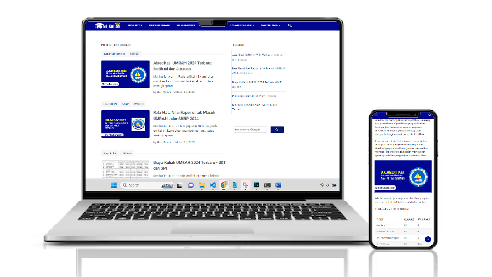

(Education)
Marikuliah.com adalah situs web pertama yang saya kembangkan untuk belajar bagaimana mendapatkan traffic.
Saya membangun web ini dengan misi untuk membantu seluruh siswa yang ada di Indonesia agar bisa mendapatkan informasi terkait perguruan tinggi, beasiswa dan materi belajar.
Harapannya dengan memperoleh informasi dari marikuliah.com, calon mahasiswa bisa menemukan perguruan tinggi atau universitas yang tepat untuk mereka.
Mendatangkan banyak traffic dan monetisasi Google Adsense.
Ruang Lingkup Pekerjaan:
Berikut ini adalah beberapa strategi yang saya terapkan untuk mendatangkan traffic harian sebesar 3000-5000 user.
SEO on Page merupakan hal mendasar yang harus disiapkan untuk mendatangkan traffic secara organik. Maka dari itu saya memulai untuk memilih template yang ringan, cepat, dan sudah menerapkan schema-markup.
Setelah melakukan riset, saya akhirnya menemukan template blog yang sudah cukup terkenal ampuh untuk mendatangkan banyak traffic.
Adapun beberapa hal utama yang menurut saya harus dimiliki website adalah sebagai berikut:
Ada dua strategi yang saya lakukan untuk melakukan keyword research dengan menggunakan tools Semrush.
a. Seed Keyword
b. Kompetitor
3. Steal KW from Weak Kompetitor
Dengan strategi di atas berikut hasil yang saya dapatkan:
Secara dramatis dalam 3 bulan pertama marikuliah.com bisa keluar dari google sandbox dan mendapatkan jumlah klik kunjungan sebanyak 86.000 klik dan total impresi 2,38 juta.
Selama 12 bulan terakhir marikuliah.com mampu mencatatkan Total Klik 715.000 dan 15.9 juta impresi.
Terdapat 2 puncak ATH (All Time High) dalam grafik tersebut yang mendatangkan klik sebanyak 29.000-30.000 per hari. Di mana kedua puncak tersebut adalah hari pengumuman SNBT dan SNBP.
Setelah selesai euforia awal masa perkuliahan, sekarang marikuliah.com konsisten mendapatkan traffic harian 600-800 klik per hari.